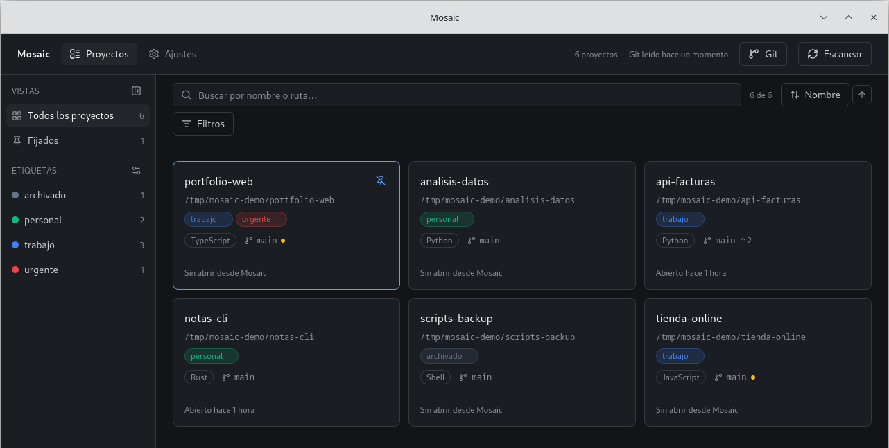

<title>Mosaic</title>
<link rel="preconnect" href="https://fonts.googleapis.com">
<link rel="preconnect" href="https://fonts.gstatic.com" crossorigin>
<link rel="stylesheet" href="https://fonts.googleapis.com/css2?family=Inter:wght@400;500;600&family=JetBrains+Mono:wght@400;500&display=swap">
<style>
  /*
   * AVISO: los tokens de esta hoja se sincronizan A MANO con los de la
   * aplicación (`src/lib/styles/tokens.css`). Si cambias la paleta allí,
   * actualízala también aquí o la web se quedará con la anterior.
   *
   * Los colores son los tokens de `src/app.css` en su tema oscuro, copiados en
   * oklch tal cual. La página y la aplicación comparten paleta por definición,
   * no por parecido: si un día cambian los tokens, esta hoja se actualiza con
   * los mismos valores.
   */
  :root {
    --surface-0: oklch(19% 0.008 260);
    --surface-1: oklch(23% 0.01 260);
    --surface-2: oklch(27% 0.012 260);
    --border: oklch(34% 0.014 260);
    --border-soft: oklch(30% 0.012 260);
    --strong: oklch(97% 0.002 260);
    --content: oklch(85% 0.006 260);
    --muted: oklch(65% 0.01 260);
    --accent: oklch(70% 0.15 258);
    --accent-strong: oklch(78% 0.14 258);
    --dirty: oklch(75% 0.14 60);
    --clean: oklch(72% 0.13 155);

    --sans: 'Inter', ui-sans-serif, system-ui, sans-serif;
    --mono: 'JetBrains Mono', ui-monospace, 'SFMono-Regular', monospace;

    /* El mismo par de radios que usan las tarjetas y los botones de la app. */
    --radius-card: 8px;
    --radius-control: 6px;

    color-scheme: dark;
  }

  * { box-sizing: border-box; }

  body {
    margin: 0;
    background: var(--surface-0);
    color: var(--content);
    font-family: var(--sans);
    font-size: 16px;
    line-height: 1.6;
    -webkit-font-smoothing: antialiased;
  }

  .marco {
    width: 100%;
    max-width: 1100px;
    margin: 0 auto;
    padding-inline: 20px;
  }

  h1, h2, h3 {
    margin: 0;
    color: var(--strong);
    font-weight: 600;
    letter-spacing: -0.015em;
    text-wrap: balance;
  }
  p { margin: 0; }
  a { color: inherit; }
  code {
    font-family: var(--mono);
    font-size: 0.9em;
    color: var(--content);
  }

  .boton {
    display: inline-flex;
    align-items: center;
    gap: 8px;
    padding: 10px 18px;
    border-radius: var(--radius-control);
    border: 1px solid transparent;
    font: 500 14.5px/1 var(--sans);
    text-decoration: none;
    white-space: nowrap;
    transition: background 0.18s ease, border-color 0.18s ease;
  }
  .boton--solido {
    background: var(--accent);
    color: oklch(19% 0.008 260);
    font-weight: 600;
  }
  .boton--solido:hover { background: var(--accent-strong); }
  .boton--borde {
    border-color: var(--border);
    color: var(--strong);
  }
  .boton--borde:hover { background: var(--surface-1); }
  .boton small {
    font-family: var(--mono);
    font-size: 11.5px;
    font-weight: 400;
    opacity: 0.7;
  }

  a:focus-visible {
    outline: 2px solid var(--accent);
    outline-offset: 3px;
  }

  /* Cabecera */
  .cabecera {
    position: sticky;
    top: env(safe-area-inset-top, 0px);
    z-index: 10;
    border-bottom: 1px solid var(--border-soft);
    background: color-mix(in oklab, var(--surface-0) 85%, transparent);
    backdrop-filter: blur(12px);
  }
  .cabecera__fila {
    height: 60px;
    display: flex;
    align-items: center;
    gap: 26px;
  }
  .logotipo {
    display: inline-flex;
    align-items: center;
    gap: 10px;
    font-weight: 600;
    color: var(--strong);
    text-decoration: none;
    letter-spacing: -0.01em;
  }
  .logotipo img { width: 22px; height: 22px; border-radius: 5px; }
  .cabecera nav {
    margin-left: auto;
    display: flex;
    align-items: center;
    gap: 22px;
    font-size: 14px;
  }
  .cabecera nav a {
    color: var(--muted);
    text-decoration: none;
    white-space: nowrap;
    transition: color 0.18s ease;
  }
  .cabecera nav a:hover { color: var(--strong); }

  /* Portada */
  .portada { padding-block: clamp(56px, 9vh, 104px) clamp(40px, 6vh, 64px); }
  .portada h1 {
    font-size: clamp(2.1rem, 1.3rem + 2.6vw, 3.4rem);
    line-height: 1.08;
    max-width: 22ch;
  }
  .portada__texto {
    margin-top: 18px;
    max-width: 54ch;
    font-size: clamp(1rem, 0.96rem + 0.3vw, 1.12rem);
  }
  .portada__acciones { margin-top: 28px; display: flex; flex-wrap: wrap; gap: 12px; }

  .pantalla {
    margin: clamp(40px, 6vh, 68px) 0 0;
    border: 1px solid var(--border);
    border-radius: var(--radius-card);
    background: var(--surface-1);
    overflow: hidden;
  }
  .pantalla img { display: block; width: 100%; height: auto; }
  .pantalla figcaption {
    border-top: 1px solid var(--border-soft);
    padding: 10px 14px;
    font-size: 12.5px;
    color: var(--muted);
  }

  /* Marcadores que detecta el escáner */
  .marcadores {
    border-block: 1px solid var(--border-soft);
    padding-block: 22px;
  }
  .marcadores__fila { display: flex; flex-wrap: wrap; align-items: center; gap: 10px 14px; }
  .marcadores p { font-size: 14px; color: var(--muted); margin-right: 6px; }
  .marcadores code {
    border: 1px solid var(--border);
    border-radius: var(--radius-control);
    padding: 4px 9px;
    font-size: 12px;
    color: var(--content);
    background: var(--surface-1);
  }

  section { padding-block: clamp(56px, 8vh, 96px); }
  .titulo { max-width: 56ch; display: flex; flex-direction: column; gap: 12px; }
  .titulo h2 {
    font-size: clamp(1.5rem, 1.15rem + 1.3vw, 2.1rem);
    line-height: 1.15;
  }
  .titulo p { color: var(--muted); }

  /*
   * La sección de capacidades usa la rejilla de tarjetas de la propia
   * aplicación, incluidos sus badges: es el objeto que el producto ya tiene,
   * así que la página no necesita inventarse otro lenguaje.
   */
  .rejilla {
    margin-top: clamp(32px, 5vh, 52px);
    display: grid;
    grid-template-columns: repeat(6, 1fr);
    gap: 14px;
  }
  .pieza {
    border: 1px solid var(--border);
    border-radius: var(--radius-card);
    background: var(--surface-1);
    padding: 22px;
    display: flex;
    flex-direction: column;
    gap: 10px;
    min-width: 0;
  }
  .pieza--ancha { grid-column: span 4; }
  .pieza--corta { grid-column: span 2; }
  .pieza--media { grid-column: span 3; }
  .pieza--acento {
    background: color-mix(in oklab, var(--accent) 12%, var(--surface-1));
    border-color: color-mix(in oklab, var(--accent) 40%, var(--border));
  }
  .pieza h3 { font-size: 1.05rem; }
  .pieza p { color: var(--muted); font-size: 14.5px; }

  .muestra { display: flex; flex-wrap: wrap; gap: 8px; margin-top: 2px; }
  .etiqueta {
    font-size: 11px;
    line-height: 1.5;
    padding: 1px 8px;
    border-radius: 999px;
    border: 1px solid;
    white-space: nowrap;
  }
  .rama {
    display: inline-flex;
    align-items: center;
    gap: 5px;
    font-family: var(--mono);
    font-size: 11.5px;
    color: var(--muted);
  }
  .rama b { font-weight: 500; color: var(--content); }
  .rama i { width: 5px; height: 5px; border-radius: 999px; background: var(--dirty); }
  .rama i.limpio { background: var(--clean); }
  .consola {
    font-family: var(--mono);
    font-size: 12.5px;
    color: var(--content);
    border: 1px solid var(--border);
    border-radius: var(--radius-control);
    background: var(--surface-0);
    padding: 12px 14px;
    line-height: 1.9;
  }
  .consola u { text-decoration: none; color: var(--accent); }

  .pasos { margin-top: clamp(32px, 5vh, 52px); display: grid; grid-template-columns: repeat(3, minmax(0, 1fr)); gap: 26px; }
  .paso { display: flex; flex-direction: column; gap: 10px; }
  .paso h3 { font-size: 1.05rem; }
  .paso p { color: var(--muted); font-size: 14.5px; }
  .paso__medida {
    margin-top: 2px;
    font-family: var(--mono);
    font-size: 12px;
    color: var(--content);
    border-left: 2px solid var(--accent);
    padding-left: 10px;
  }

  .reglas { margin-top: clamp(32px, 5vh, 52px); display: grid; grid-template-columns: repeat(2, minmax(0, 1fr)); gap: 0 56px; }
  .regla {
    padding-block: 24px;
    border-top: 1px solid var(--border-soft);
    display: grid;
    grid-template-columns: 124px minmax(0, 1fr);
    gap: 16px;
    align-items: baseline;
  }
  .regla h3 { font-size: 15px; }
  .regla p { color: var(--muted); font-size: 14.5px; }

  .fases {
    margin-top: clamp(32px, 5vh, 52px);
    border: 1px solid var(--border);
    border-radius: var(--radius-card);
    overflow: hidden;
  }
  .fase {
    display: grid;
    grid-template-columns: 210px minmax(0, 1fr) auto;
    gap: 18px;
    align-items: center;
    padding: 14px 18px;
    font-size: 14.5px;
    border-top: 1px solid var(--border-soft);
  }
  .fase:first-child { border-top: 0; }
  .fase__nombre { color: var(--strong); font-weight: 500; }
  .fase--futura .fase__nombre { color: var(--content); font-weight: 400; }
  .fase__detalle { color: var(--muted); font-size: 13.5px; }
  .sello {
    font-family: var(--mono);
    font-size: 11px;
    padding: 3px 9px;
    border-radius: 999px;
    border: 1px solid var(--border);
    color: var(--muted);
    white-space: nowrap;
  }
  .sello--lista { color: var(--clean); border-color: color-mix(in oklab, var(--clean) 40%, transparent); }
  .sello--ahora { color: var(--accent); border-color: color-mix(in oklab, var(--accent) 45%, transparent); }

  .dudas { margin-top: clamp(32px, 5vh, 52px); display: grid; gap: 1px; }
  .duda {
    border-top: 1px solid var(--border-soft);
    padding-block: 22px;
    display: grid;
    grid-template-columns: minmax(0, 0.85fr) minmax(0, 1.15fr);
    gap: 26px;
  }
  .duda h3 { font-size: 1rem; }
  .duda p { color: var(--muted); font-size: 14.5px; }

  .cierre {
    border: 1px solid var(--border);
    border-radius: var(--radius-card);
    background: var(--surface-1);
    padding: clamp(28px, 4vw, 44px);
    display: flex;
    flex-wrap: wrap;
    align-items: center;
    justify-content: space-between;
    gap: 22px;
    margin-bottom: clamp(56px, 8vh, 96px);
  }
  .cierre h2 { font-size: clamp(1.4rem, 1.1rem + 1vw, 1.9rem); }
  .cierre p { margin-top: 10px; color: var(--muted); max-width: 46ch; }

  footer {
    border-top: 1px solid var(--border-soft);
    padding-block: 24px 36px;
    display: flex;
    flex-wrap: wrap;
    gap: 12px 26px;
    align-items: center;
    font-size: 13px;
    color: var(--muted);
  }
  footer a { text-decoration: none; }
  footer a:hover { color: var(--strong); }
  footer .cola { margin-left: auto; font-family: var(--mono); font-size: 11.5px; }

  @media (max-width: 900px) {
    .rejilla { grid-template-columns: repeat(2, 1fr); }
    .pieza--ancha, .pieza--corta, .pieza--media { grid-column: span 2; }
    .pasos { grid-template-columns: minmax(0, 1fr); gap: 22px; }
    .reglas { grid-template-columns: minmax(0, 1fr); gap: 0; }
    .fase { grid-template-columns: minmax(0, 1fr) auto; }
    .fase__detalle { display: none; }
    .duda { grid-template-columns: minmax(0, 1fr); gap: 8px; }
  }

  @media (max-width: 560px) {
    .cabecera nav a:not(.boton) { display: none; }
  }

  @media (prefers-reduced-motion: reduce) {
    * { transition: none !important; }
  }
</style>

<header class="cabecera">
  <div class="marco cabecera__fila">
    <a class="logotipo" href="#inicio">
      
      Mosaic
    </a>
    <nav>
      <a href="#capacidades">Qué hace</a>
      <a href="#reglas">Principios</a>
      <a href="#estado">Estado</a>
      <a class="boton boton--borde" href="https://github.com/IzanVil/mosaic">GitHub</a>
    </nav>
  </div>
</header>

<main id="inicio">
  <div class="marco">
    <section class="portada">
      <h1>Todos tus proyectos de código, en una pantalla.</h1>
      <p class="portada__texto">
        Mosaic recorre las carpetas que le señales y las presenta como un tablero, con el
        estado de Git de cada repositorio, etiquetas propias y un clic para abrir cada
        proyecto donde trabajas. Corre entero en tu máquina.
      </p>
      <div class="portada__acciones">
        <a class="boton boton--solido" href="https://github.com/IzanVil/mosaic">
          Ver el código <small>MIT</small>
        </a>
        <a class="boton boton--borde" href="#como-funciona">Cómo funciona</a>
      </div>

      <figure class="pantalla">
        
        <figcaption>El tablero, con seis proyectos de ejemplo y sus etiquetas.</figcaption>
      </figure>
    </section>
  </div>

  <div class="marcadores">
    <div class="marco marcadores__fila">
      <p>Reconoce un proyecto por su fichero marcador:</p>
      <code>.git</code>
      <code>package.json</code>
      <code>Cargo.toml</code>
      <code>pyproject.toml</code>
      <code>go.mod</code>
      <code>pom.xml</code>
      <code>build.gradle</code>
      <code>composer.json</code>
      <code>Gemfile</code>
    </div>
  </div>

  <div class="marco">
    <section id="capacidades">
      <div class="titulo">
        <h2>Lo que ves sin abrir una terminal</h2>
        <p>Cada tarjeta responde a lo que ibas a comprobar antes de entrar en la carpeta.</p>
      </div>

      <div class="rejilla">
        <div class="pieza pieza--ancha">
          <h3>Estado de Git en vivo</h3>
          <p>
            Rama actual, si te quedan cambios sin commitear y cuántos commits llevas por
            delante o por detrás de tu upstream. Se relee del disco cada cinco minutos, sin
            hacer fetch y sin tocar la red.
          </p>
          <div class="muestra">
            <span class="rama"><i></i><b>main</b> 2 sin commitear</span>
            <span class="rama"><i class="limpio"></i><b>feat/tags</b> 3 por delante</span>
          </div>
        </div>

        <div class="pieza pieza--corta pieza--acento">
          <h3>Abrir donde trabajas</h3>
          <p>
            Editor, terminal o explorador de archivos con un clic, en la aplicación que ya
            tienes instalada.
          </p>
        </div>

        <div class="pieza pieza--corta">
          <h3>Etiquetas con color</h3>
          <p>Las creas desde la propia tarjeta y filtras por ellas.</p>
          <div class="muestra">
            <span class="etiqueta" style="background:color-mix(in oklab, #4d9fff 15%, transparent);border-color:color-mix(in oklab, #4d9fff 45%, transparent);color:#8cc2ff">trabajo</span>
            <span class="etiqueta" style="background:color-mix(in oklab, #10b981 15%, transparent);border-color:color-mix(in oklab, #10b981 45%, transparent);color:#5fe0ad">personal</span>
            <span class="etiqueta" style="background:color-mix(in oklab, #f0b45a 15%, transparent);border-color:color-mix(in oklab, #f0b45a 45%, transparent);color:#f0b45a">archivado</span>
          </div>
        </div>

        <div class="pieza pieza--media">
          <h3>Búsqueda que perdona</h3>
          <p>
            Escribes el nombre a medias o con una errata y el proyecto aparece igual. Busca
            en el nombre y en la ruta, ignorando acentos y mayúsculas.
          </p>
          <div class="consola">
            <u>mosiac</u> &rarr; mosaic<br>
            <u>diseno</u> &rarr; diseño-web<br>
            <u>Poyects</u> &rarr; los tres proyectos de esa carpeta
          </div>
        </div>

        <div class="pieza pieza--corta">
          <h3>Filtros y orden</h3>
          <p>
            Por etiqueta, lenguaje, estado de Git o destacados. La vista que dejes puesta
            sigue ahí la próxima vez que abras.
          </p>
        </div>
      </div>
    </section>

    <section id="como-funciona">
      <div class="titulo">
        <h2>Tres pasos y no vuelves a buscar una carpeta</h2>
      </div>

      <div class="pasos">
        <div class="paso">
          <h3>Apuntas una raíz</h3>
          <p>
            La carpeta donde guardas tus proyectos. Puedes añadir varias y desactivar las
            que no quieras mirar ahora, sin perder lo que encontró dentro.
          </p>
        </div>
        <div class="paso">
          <h3>Recorre el disco</h3>
          <p>
            Baja cuatro niveles buscando marcadores, deduce el lenguaje principal y se salta
            <code>node_modules</code>, <code>target</code> y compañía. Un monorepo es una
            tarjeta; dos repositorios anidados son dos.
          </p>
          <p class="paso__medida">2.073 carpetas en 182 ms, medido en la máquina del autor</p>
        </div>
        <div class="paso">
          <h3>Organizas y abres</h3>
          <p>
            Etiquetas, destacas, filtras y lanzas cada proyecto donde toque. Si una carpeta
            desaparece del disco se marca como ausente en vez de borrarse, así que no
            pierdes sus etiquetas.
          </p>
        </div>
      </div>
    </section>

    <section id="reglas">
      <div class="titulo">
        <h2>Deliberadamente tonto</h2>
        <p>No sincroniza, no sugiere y no aprende de ti. Cuatro reglas que no se negocian.</p>
      </div>

      <div class="reglas">
        <div class="regla">
          <h3>Local-first</h3>
          <p>Todo vive en un SQLite dentro de tu carpeta de datos. Cero llamadas remotas.</p>
        </div>
        <div class="regla">
          <h3>Privado</h3>
          <p>Sin telemetría, sin analítica, sin cuenta que crear ni sesión que iniciar.</p>
        </div>
        <div class="regla">
          <h3>Sin IA</h3>
          <p>Ninguna API de modelos. Lo que ves es lo que hay en tu disco, sin intermediarios.</p>
        </div>
        <div class="regla">
          <h3>Solo lectura</h3>
          <p>Lee los metadatos de tus repositorios. Nunca escribe en ellos, ni siquiera un fetch.</p>
        </div>
      </div>
    </section>

    <section id="estado">
      <div class="titulo">
        <h2>Cuatro fases de siete</h2>
        <p>
          El desarrollo va por fases cerradas, cada una verificada a mano antes de pasar a
          la siguiente. Esto es lo que funciona hoy.
        </p>
      </div>

      <div class="fases">
        <div class="fase">
          <span class="fase__nombre">Esqueleto y escaneo</span>
          <span class="fase__detalle">Rutas configurables, detección por marcadores, SQLite con migraciones</span>
          <span class="sello sello--lista">hecha</span>
        </div>
        <div class="fase">
          <span class="fase__nombre">Integración con Git</span>
          <span class="fase__detalle">Rama, cambios sin commitear, ahead y behind, refresco en segundo plano</span>
          <span class="sello sello--lista">hecha</span>
        </div>
        <div class="fase">
          <span class="fase__nombre">Tarjetas y tablero</span>
          <span class="fase__detalle">Rejilla adaptable, acciones rápidas, detección de editores y terminales</span>
          <span class="sello sello--lista">hecha</span>
        </div>
        <div class="fase">
          <span class="fase__nombre">Etiquetas y filtros</span>
          <span class="fase__detalle">Etiquetas con color, búsqueda difusa, filtros combinados, vista recordada</span>
          <span class="sello sello--lista">hecha</span>
        </div>
        <div class="fase fase--futura">
          <span class="fase__nombre">Detalle de proyecto</span>
          <span class="fase__detalle">README renderizado, últimos commits, ramas y notas personales</span>
          <span class="sello sello--ahora">siguiente</span>
        </div>
        <div class="fase fase--futura">
          <span class="fase__nombre">Atajos y ajustes</span>
          <span class="fase__detalle">Paleta de comandos, tema claro y oscuro, exportar la configuración</span>
          <span class="sello">pendiente</span>
        </div>
        <div class="fase fase--futura">
          <span class="fase__nombre">Empaquetado</span>
          <span class="fase__detalle">Instaladores para Linux, macOS y Windows</span>
          <span class="sello">pendiente</span>
        </div>
      </div>
    </section>

    <section id="dudas">
      <div class="titulo">
        <h2>Lo que suele preguntarse</h2>
      </div>

      <div class="dudas">
        <div class="duda">
          <h3>¿Manda algo a internet?</h3>
          <p>
            No. <code>git2</code> va compilado sin soporte de red, así que el binario no
            sabe hablar con un remoto ni para actualizarse. El contador de commits por
            detrás solo se mueve cuando haces <code>pull</code> tú.
          </p>
        </div>
        <div class="duda">
          <h3>¿Puede romper mis repositorios?</h3>
          <p>
            Los abre en lectura y no ejecuta comandos de Git. Los botones de abrir lanzan tu
            editor o tu terminal pasando la ruta como argumento suelto, sin construir una
            línea de shell.
          </p>
        </div>
        <div class="duda">
          <h3>¿Hay instalador?</h3>
          <p>
            Todavía no hay versión publicada. El workflow de release compila
            <code>.deb</code>, <code>.rpm</code>, <code>.AppImage</code>, <code>.dmg</code>
            universal y <code>.msi</code>, pero sin firmar: macOS y Windows avisarán la
            primera vez.
          </p>
        </div>
        <div class="duda">
          <h3>¿Aguanta muchos proyectos?</h3>
          <p>
            Está pensado para varios cientos en la misma pantalla. El escaneo tiene tope de
            entradas y avisa si una raíz se queda a medias, en vez de colgarse en silencio.
          </p>
        </div>
      </div>
    </section>

    <div class="cierre">
      <div>
        <h2>Clónalo y compílalo</h2>
        <p>
          Con <code>pnpm install</code> y <code>pnpm tauri dev</code> lo tienes corriendo.
          Necesitas Rust estable, Node y pnpm.
        </p>
      </div>
      <a class="boton boton--solido" href="https://github.com/IzanVil/mosaic">Ver en GitHub</a>
    </div>

    <footer>
      <span>MIT</span>
      <a href="https://github.com/IzanVil/mosaic">github.com/IzanVil/mosaic</a>
      <span>Rust, Tauri 2, Svelte 5, SQLite</span>
      <span class="cola">sin analítica ni scripts de terceros</span>
    </footer>
  </div>
</main>
